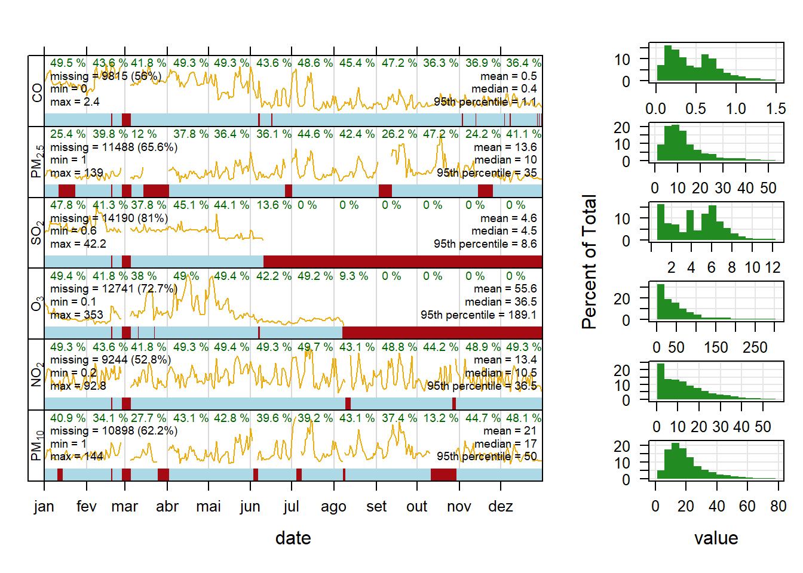

Pacote openair: Tools for the Analysis of Air Pollution Data
Esse pacote é específico para análise de dados de qualidade do ar.
Trabalharemos com dados de qualidade do ar para a estação Delegacia Amazonas (Belo Horizonte/MG) para o ano de 2019:
## date PM10 NO2 O3 SO2 PM25 CO
## 1 01/01/2019 00:30 29 3.37 15.43 0.74 NA 0.934
## 2 01/01/2019 01:30 24 3.19 15.13 0.75 NA 0.899
## 3 01/01/2019 02:30 18 2.81 14.53 0.74 14 0.925
## 4 01/01/2019 03:30 14 2.87 15.34 0.76 11 0.903
## 5 01/01/2019 04:30 11 2.00 15.14 0.70 9 0.665
## 6 01/01/2019 05:30 NA 3.58 40.82 1.75 NA 0.668## 'data.frame': 8760 obs. of 7 variables:
## $ date: chr "01/01/2019 00:30" "01/01/2019 01:30" "01/01/2019 02:30" "01/01/2019 03:30" ...
## $ PM10: int 29 24 18 14 11 NA NA NA 5 5 ...
## $ NO2 : num 3.37 3.19 2.81 2.87 2 ...
## $ O3 : num 15.4 15.1 14.5 15.3 15.1 ...
## $ SO2 : num 0.74 0.75 0.74 0.76 0.7 1.75 3.61 6.33 6.19 5.89 ...
## $ PM25: int NA NA 14 11 9 NA NA NA NA 4 ...
## $ CO : num 0.934 0.899 0.925 0.903 0.665 0.668 0.686 0.664 0.643 0.649 ...Para trabalhar com esse pacote, o nome da coluna de data-hora deve ser chamada date.
A coluna date está como caractere, portanto, precisamos transformar para data-hora.
dado$date<-as.POSIXct(dado$date, format="%d/%m/%Y %H:%M")## date PM10 NO2 O3 SO2 PM25 CO
## 1 2019-01-01 00:30:00 29 3.37 15.43 0.74 NA 0.934
## 2 2019-01-01 01:30:00 24 3.19 15.13 0.75 NA 0.899
## 3 2019-01-01 02:30:00 18 2.81 14.53 0.74 14 0.925
## 4 2019-01-01 03:30:00 14 2.87 15.34 0.76 11 0.903
## 5 2019-01-01 04:30:00 11 2.00 15.14 0.70 9 0.665
## 6 2019-01-01 05:30:00 NA 3.58 40.82 1.75 NA 0.668## 'data.frame': 8760 obs. of 7 variables:
## $ date: POSIXct, format: "2019-01-01 00:30:00" "2019-01-01 01:30:00" ...
## $ PM10: int 29 24 18 14 11 NA NA NA 5 5 ...
## $ NO2 : num 3.37 3.19 2.81 2.87 2 ...
## $ O3 : num 15.4 15.1 14.5 15.3 15.1 ...
## $ SO2 : num 0.74 0.75 0.74 0.76 0.7 1.75 3.61 6.33 6.19 5.89 ...
## $ PM25: int NA NA 14 11 9 NA NA NA NA 4 ...
## $ CO : num 0.934 0.899 0.925 0.903 0.665 0.668 0.686 0.664 0.643 0.649 ...Veja como agora a coluna date está escrita, o R reconhece como data-hora! Estamos prontos para trabalhar com funções do pacote.
openair::summaryPlot(mydata = dado,
date.breaks = 12,
period = "months")## date1 date2 PM10 NO2 O3 SO2 PM25 CO
## "POSIXct" "POSIXt" "integer" "numeric" "numeric" "numeric" "integer" "numeric"## Detected data with Daylight Saving Time.
O argumento date.breaks controla a divisão do eixo x, enquanto o argumento period define a divisão do conjunto para plotagem da análise de completude. O default para esse argumento é years, porém, como estamos trabalhando apenas com um ano de dados, escolhemos months - sempre no plural - para uma análise mais detalhada.
O gráfico é dividido em duas colunas: a primeira, com a estatística e completude dos dados, e a segunda, com o histograma das variáveis. Casa deseje poluentes específicos, faça a indexação diretamente no argumento mydata.
Em uma rápida análise na segunda coluna do gráfico, podemos verificar que não seguem uma distribuição normal, porém devemos sempre verificar a estatística.
library(nortest)
#H0 = distribuição normal: p > 0.05 (Hipótese nula)
#Ha = distribuição não normal: p <= 0.05 (Hipótese alternativa)
nortest::ad.test(dado$PM10) #não é normal##
## Anderson-Darling normality test
##
## data: dado$PM10
## A = 264.38, p-value < 2.2e-16nortest::ad.test(dado$NO2) #não é normal##
## Anderson-Darling normality test
##
## data: dado$NO2
## A = 257.92, p-value < 2.2e-16nortest::ad.test(dado$O3) #não é normal##
## Anderson-Darling normality test
##
## data: dado$O3
## A = 330.33, p-value < 2.2e-16nortest::ad.test(dado$SO2) #não é normal##
## Anderson-Darling normality test
##
## data: dado$SO2
## A = 39.888, p-value < 2.2e-16nortest::ad.test(dado$PM25) #não é normal##
## Anderson-Darling normality test
##
## data: dado$PM25
## A = 327.83, p-value < 2.2e-16nortest::ad.test(dado$CO) #não é normal##
## Anderson-Darling normality test
##
## data: dado$CO
## A = 135.65, p-value < 2.2e-16citation(package = "openair",auto = F)##
## To cite package 'openair' in publications use:
##
## Carslaw, D. C. and K. Ropkins, (2012) openair --- an R package for
## air quality data analysis. Environmental Modelling & Software.
## Volume 27-28, 52-61.
##
## A BibTeX entry for LaTeX users is
##
## @Article{,
## title = {openair --- An R package for air quality data analysis},
## author = {David C. Carslaw and Karl Ropkins},
## journal = {Environmental Modelling & Software},
## volume = {27--28},
## number = {0},
## pages = {52--61},
## year = {2012},
## issn = {1364-8152},
## doi = {10.1016/j.envsoft.2011.09.008},
## }